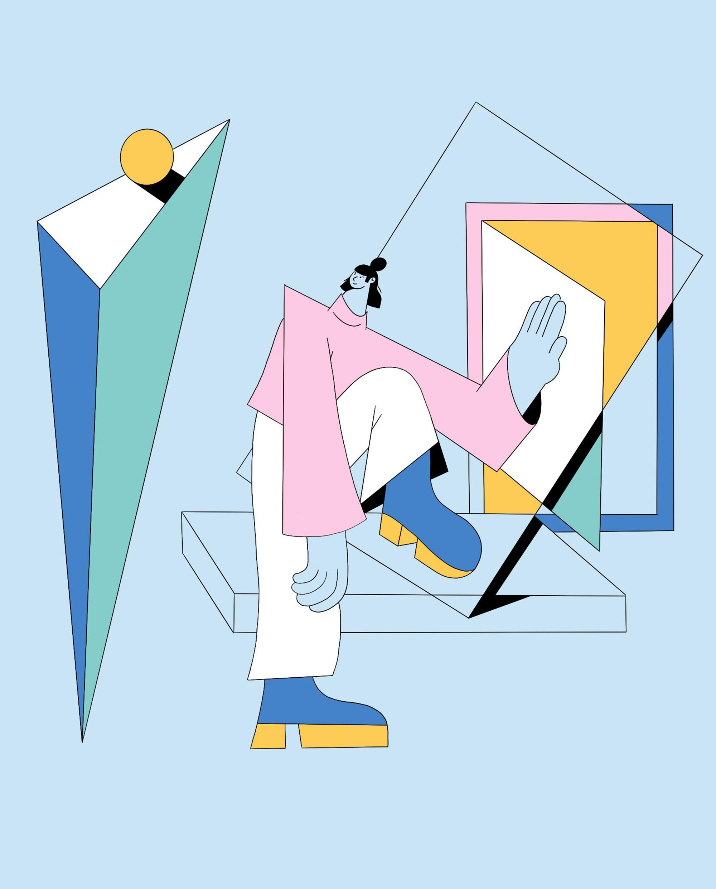
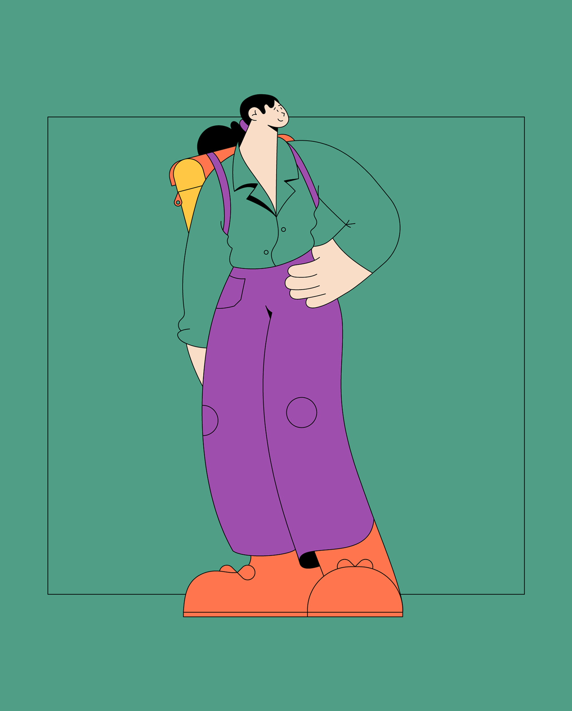
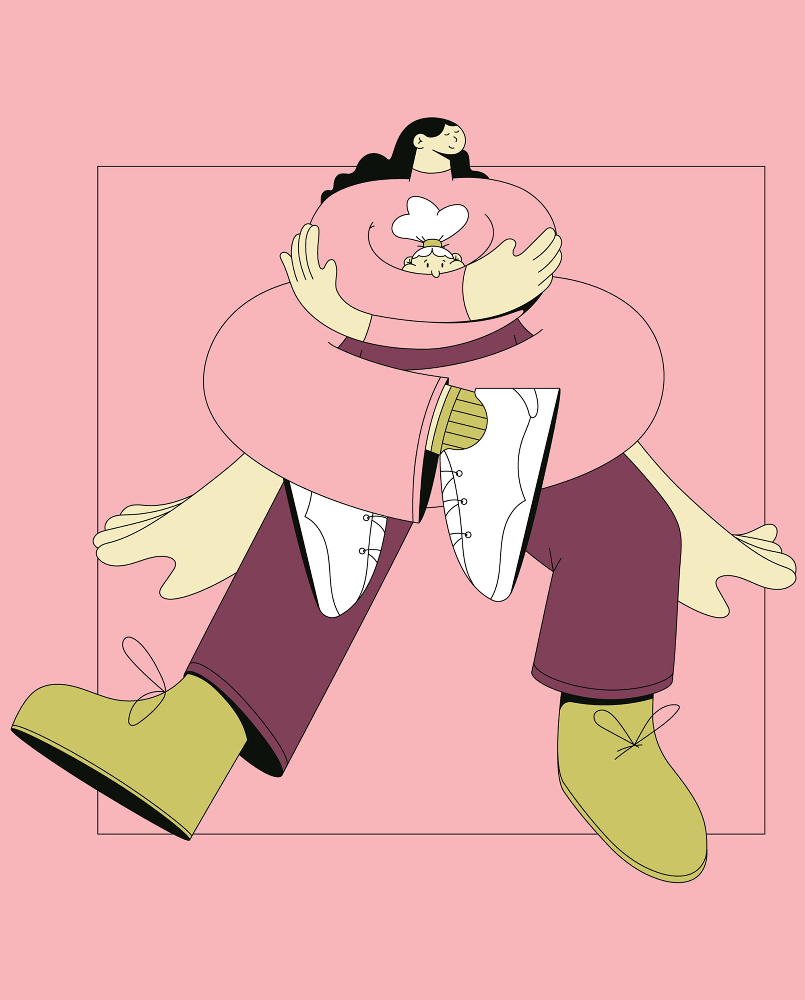
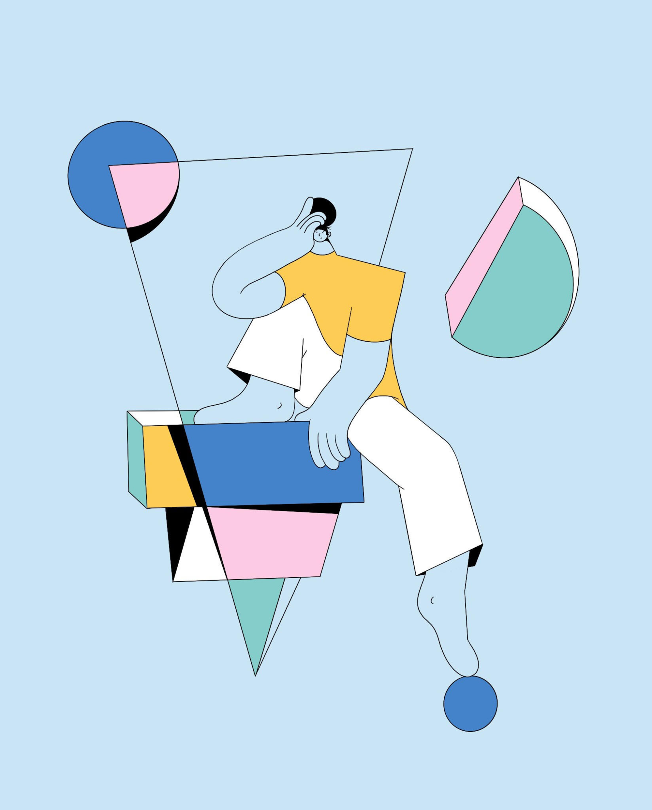

Linn Fritz
Swedish illustrator, designer and animator Linn Fritz lives and works in London where she creates
charmingly clean, precise imagery in a trademark pastel palette for a wide range of editorial and
commercial clients. Her neat, fluid line work was honed during her time at Hyper Island, a time
which Linn cites as “hands down one of the best experiences” of her life. “My Hyper Island
journey completely changed me as a person.” she says, “It pushed me to work harder and gave
me the tools to succeed in the real world.”



